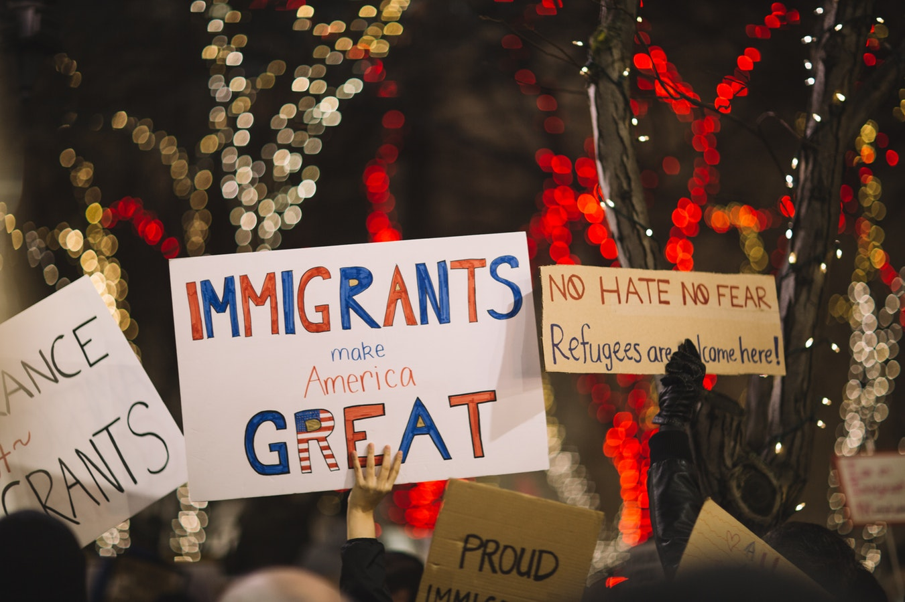

On November 12, the Southeast Asian Students Association (SEASA) at UNC-Chapel Hill met for a discussion on immigration policies and how these policies are affecting the Southeast Asian community locally.
The discussion was moderated and presented by Sun Bujri and Whitney Smith, said the SEASA Facebook group through Messenger. Both work for the Southeast Asian Coalition in Charlotte (SEAC), respectively as a statewide base building organizer and integrated voter-engagement consultant.
The SEAC website states that their main purpose is to “reinforce and uphold integrity, empowerment, inclusion, tradition, leadership and critical consciousness at the grassroots level.”
Contrastingly, the White House website’s page on foreign policy says, “President Trump is bolstering American influence by leading a coalition of strong and independent nations to promote security, prosperity, and peace both within America’s borders and beyond. The promise of a better future will come in part from reasserting American sovereignty and the right of all nations to determine their own futures.”
The immigration discussion was livestreamed from the SEASA Facebook page and currently has 189 views.

“It was a lot of informative information that I’d never heard about before,” said Brooke Fisher, a senior multimedia major at UNC-Chapel Hill who attended the event. “Because when we talk about the immigration problem in America, a lot of times it focuses on mainly Latin-x communities, so sometimes you forget that people of Asian backgrounds are also part of this immigration question in America.”
Fisher said that she’d like these issues to be discussed with regards to larger pan-Asian community as well.
The presenters provided ways to talk to ICE agents, listing rights and the need for a warrant to be searched.
“I think of different scenarios,” said Smith. “Like when I’m driving and I have people in my car [that are] undocumented, if I don’t know my rights and the people in the car don’t know their rights, if we get pulled over, I could be putting these folks in danger. Or, we’re in more danger if I am basically unable to sort of exercise my right.”
Smith and Bujri also brought up that now, ICE agents have been seen boarding school buses, and the “school-to-prison-to-deportation pipeline” that ends with people being deported after committing small crimes and being kept within the criminal system until ICE can take them into custody.
On the official White House website, Trump is quoted saying, “Illegal aliens will no longer get a free pass into our country by lodging meritless claims in seeking asylum. Instead, migrants seeking asylum will have to present themselves lawfully at a port of entry.”
This problem hits close to home.
Smith went on one of the two trips to the Stewart detention center in Lumpkin, Georgia, to see if affected people have access to attorneys, contact with family, and other services or rights. Smith calls it “the worst place on Earth.”
SEAC is working to get ICE out of certain counties, jails, and make it their goal to share information about the system and the rights people have.
“Regardless of your immigration or citizenship status,” said Smith, “you have constitutional rights, meaning you have the right to remain silent…that’s something that we want folks to learn from all of this.”
Bujri brought in a call to action, asking the audience if they know anyone who needs help.
“Families or people that feel like they're alone in this, they're not,” Buiri said. “And there are people out there that can help.”